- 재귀함수(recursive function)
-
재귀함수란 자기 자신을 호출하는 함수를 뜻합니다.
function recursive (인자) {
작업수행
if (조건충족) {
return 결과
} else {
return recursive(작업된인자)
}
}
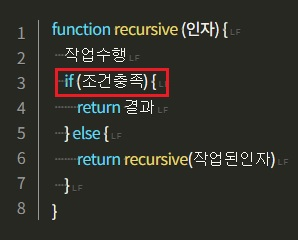
종료조건이 충족될 때까지
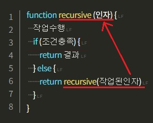
반복적으로 스스로를 불러내면서
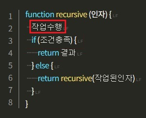
주어진 작업을 수행하는 거죠.
식으로 표현하면 다음과 같을 겁니다.
function answerByStory (question) {
// 임의의 이야기에서 답 찾기
let answer = findFromRandomStory();
// 이야기 속에서 답이 나오지 않으면
if (answer === null) {
return answerByStory(question); // 재귀 호출
// 답이 나오면
} else {
return answer; // 답을 반환
}
}
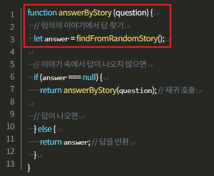
함수가 인자로 질문을 받으면 이야기를 하나 펼쳐서
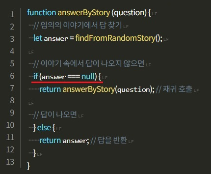
그 이야기 속에 답이 나오지 않으면
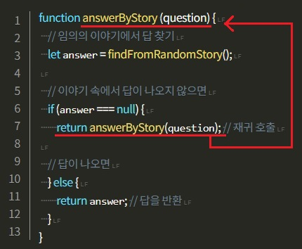
스스로를 다시 호출해서 또 다른 이야기를 펼치고
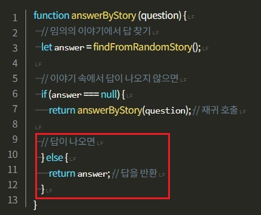
그러다 답이 나오면 그걸 반환하는 거죠.
- 한 배열의 총합
-
let numbers = [3, 1, 4, 1, 5, 9];
한 배열의 총합을 구하는 함수를 짜볼까요?
let numbers = [3, 1, 4, 1, 5, 9];
function recursive(acc, array) {
if (array.length === 0) {
return acc;
} else {
return recursive(acc + array[0], array.slice(1));
}
}
recursive(0, numbers)
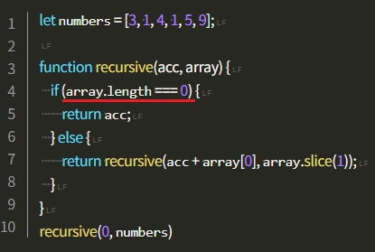
이처럼 배열의 길이가 0이 될때까지
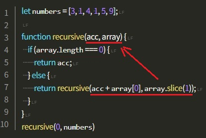
값을 하나씩 뽑아서 축적된 합과 함께
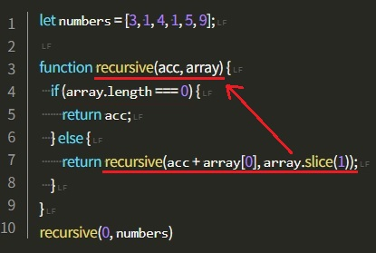
나머지를 인자로 계속 넘겨주는 재귀함수를 짤 수 있겠죠.
let numbers = [3, 1, 4, 1, 5, 9];
function recursive(acc, array) {
if (array.length === 0) {
console.log(`총합은 ${acc}`);
return acc;
} else {
try {
console.log(`recursive(${acc} [${array}])가 "`);
return recursive(acc + array[0], array.slice(1));
} catch (e) {
} finally {
console.log('"이라고 말했어요.');
}
}
}
recursive(0, numbers)
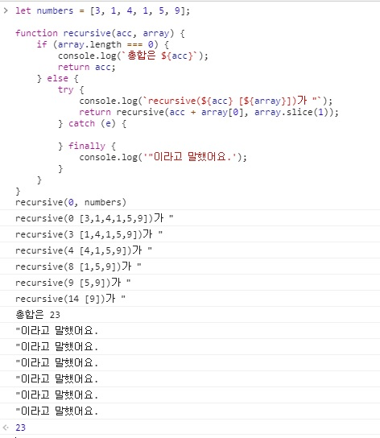
- 여기서 드는 의문
-
그런데 위와 같은 식은 반복문으로도 할 수 있지 않나요?
let numbers = [3, 1, 4, 1, 5, 9];
function for_loop(array) {
let sum = 0;
for (let i = 0; i < array.length; i++) {
sum += array[i];
}
return sum;
}
for_loop(numbers)
이렇게 for-loop를 돌리는게 짜는것도 읽는 것도 머리가 덜 아프지 않나요?
맞습니다. 재귀함수로 짜여진 코드들은 for문이나 while문 등의 반복문으로 대체 가능하고 그렇게 하는 경우가 더 쉬운 경우도 많습니다.
하지만 이런 문제에선 어떨까요?
- 특정 경우
-
let numAndAry = [3, 1, 4, [8, 1, 5], 5, 9];
자바스크립트 배열 안에 있는 숫자의 총합을 구해야됩니다.
이 배열에는 요소로 숫자가 있을 수도 있고, 또 다른 배열이 들어있을 수 있어요.
모두 숫자로 되어 있다면 아래처럼 for-loop 하나면 됩니다.
let numAndAry = [3, 1, 4, 5, 9];
function for_loop_deeper (array) {
let sum = 0;
for (let i = 0; i < array.length; i++) {
sum += array[i];
}
return sum;
}
for_loop_deeper(numAndAry)
하지만 아래처럼 배열이 껴있을 경우,
for문을 겹으로 작성해줘야 합니다.
let numAndAry = [3, 1, 4, [8, 1, 5], 5, 9];
function for_loop_deeper (array) {
let sum = 0;
for (let i = 0; i < array.length; i++) {
if (typeof array[i] === 'number') { // 인자가 숫자라면
sum += array[i];
} else { // 인자가 또 다른 배열이라면
for (let j = 0; j < array[i].length; j++) {
sum += array[i][j];
}
}
}
return sum;
}
for_loop_deeper(numAndAry)
아래처럼 배열 안에 배열 안에 배열이 또 있을 수도 있고,
그게 몇 단계로 내려갈지 알 수 없는 상황이라면,
for 문을 겹겹으로 사용해도 결과를 장담할 수 없겠죠?
let numAndAry = [3, 1, 4, [8, 1, [6, 2], 5], 5, 9, [8, 1, 5, [3, 4, 2]]];
function for_loop_deeper (array) {
let sum = 0;
for (let i = 0; i < array.length; i++) {
if (typeof array[i] === 'number') { // 인자가 숫자라면
sum += array[i];
} else { // 인자가 또 다른 배열이라면
for (let j = 0; j < array[i].length; j++) {
if (typeof array[i][j] === 'number') { // 인자가 숫자라면
sum += array[i][j];
} else { // 인자가 또 다른 배열이라면
for (let k = 0; k < array[i][j].length; k++) {
// .. 반복 ..
}
}
}
}
}
return sum;
}
for_loop_deeper(numAndAry)
물론 위치를 저장하는 등의 방식으로 다 처리할 수 있게 짤 수는 있겠지만, 코드가 복잡해지고 길어질 겁니다.
하지만 재귀함수가 출동하면 어떨까요?
- 위 예제들, 재귀함수 활용
-
let numAndAryHell = [3, [1, 4, [3, [6, 2], 5], 1, 3], 4, [8, 1, [2, 1, 9], 5], 5, 9]
function recursive_deep (acc, array) {
if (array.length === 0) {
return acc;
} else {
return recursive_deep(
acc + (typeof array[0] === 'number' ? array[0] : recursive_deep(0, array[0])),
array.slice(1)
);
}
}
recursive_deep(0, numAndAryHell);
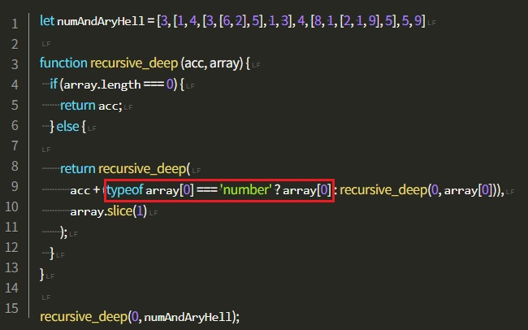
배열의 요소가 숫자면 그대로 더하고
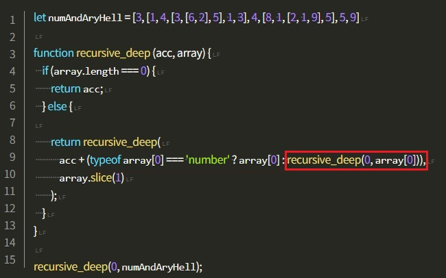
배열이라면 재귀로 똑같이 파고들도록 하면
let numAndAryHell = [3, [1, 4, [3, [6, 2], 5], 1, 3], 4, [8, 1, [2, 1, 9], 5], 5, 9]
function recursive_deep (acc, array) {
if (array.length === 0) {
return acc;
} else {
if (typeof array[0] === 'number') {
console.log(`call (${acc} [${array}])`)
}
return recursive_deep(
acc + (typeof array[0] === 'number' ? array[0] : recursive_deep(0, array[0])),
array.slice(1)
);
}
}
recursive_deep(0, numAndAryHell);
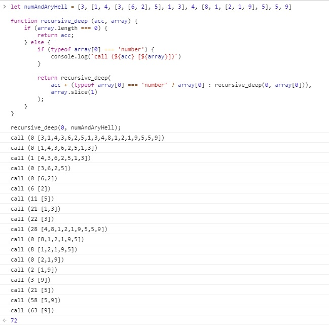
훨씬 간결한 코드가 됩니다.
이처럼 재귀함수로 작성하면 보다 효율적으로 짤 수 있는 종류의 문제들이 있습니다.
방금 문제처럼 여러 단계를 포함할 수 있는 데이터를 다루는 문제들도 있고
알고리즘 시간에 배우게 되는 각종 정렬 알고리즘들도 있습니다.
재귀함수를 머리속으로 돌리는 일이 입문자분들에게는 진입장벽이 될 수 있지만
이 재귀적 사고에 익숙해지다보면 전보다 더 다양한 문제들을 수월히 풀 수 있습니다.
- 재귀함수의 단점
-
이런 재귀함수는 성능문제가 따를 수 있습니다. 이런 반복적인 재귀함수가 계속된다면 브라우저에 부하가 걸릴 것입니다.
재귀함수는 호출될 때마다 메모리의 호출 스택에 쌓이게 됩니다.
한계치 이상으로 호출돼서 스택이 넘쳐버리면 메모리 부족으로 에러가 발생할 것입니다.
속도 면에 있어서도 재귀함수는 jump가 잦아서 반복문에 비해 시간을 더 소모합니다.
이런 문제를 해결하기 위해 많은 언어들에서 [꼬리 재귀 최적화(Tail Call Optimization)]라는 기능을 제공합니다.
재귀함수를 컴퓨터가 재해석해서 선형 알고리즘으로 만들어 실행하는 거죠.
그럼 아무리 반복이 많이 일어나도 스택이 넘치는 일은 일어나지 않습니다.
재귀함수를 코드에 사용하고 싶으면 사용하는 언어가 꼬리재귀 최적화를 지원하는지 확인하는 게 좋습니다.
- 단점 극복 : 꼬리 재귀 최적화 (Tail Call Optimization)
-
function canTailRecurse (arg) {
// ...
return canTailRecurse(arg);
}
function canNotTailRecurse (arg) {
let n;
// ...
return n * canNotTailRecurse(arg);
}
재귀함수가 꼬리 재귀가 되려면 return하는 값이
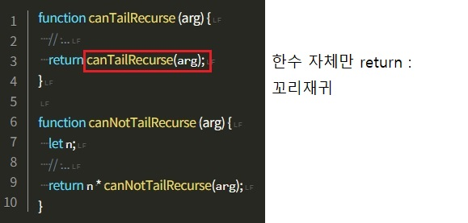
함수 그 자체만 호출하는 형태여야 합니다.
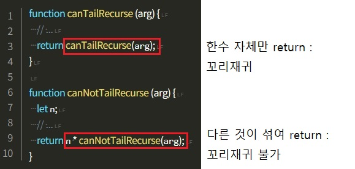
밑에 처럼 저런 코드들은 꼬리재귀가 되지 않습니다.
재귀함수는 오늘날 주목받고 있는 함수형 프로그래밍에도 많이 쓰이기 때문에 익혀두시면 앞으로 개발을 배우는 데 많은 도움이 될겁니다.
- lodash
-
lodash는 자바스크립트 고차함수 집합 및 함수형 라이브러리이다.
깊이가 얼마나 깊은 객체를 완전 복사하려면 lodash의 _.cloneDeep을 사용하길 추천한다.
lodash엔 이미 _.clone이 있는데, 이를 재귀적으로 수행해주는 함수다.
깊은 복사 외에도 유용한 함수가 많다.
Javascript 개발자라면 이미 많이 사용하고 있을것이다.
lodash는 아래 링크를 참고하길 바란다.
https://velog.io/@ashnamuh/Javascript-%EA%B9%8A%EC%9D%80-%EB%B3%B5%EC%82%AC%EC%9D%98-%ED%95%A8%EC%A0%95
https://lodash.com/docs/4.17.11#cloneDeep